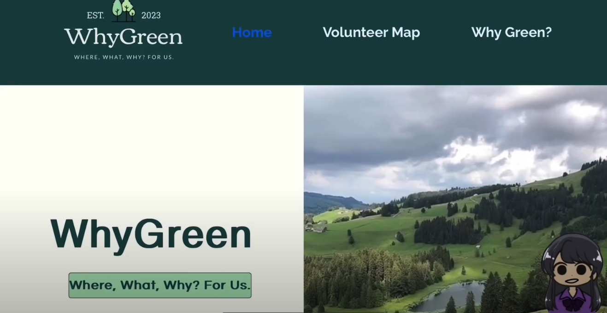

whygreen
project page · spring 2026


Founded WhyGreen, a map-based web platform that connects high school students with local environmental volunteering opportunities through filtered search and interactive mapping. Reaching over 500 students, the platform helped bridge the gap between climate awareness and meaningful action by surfacing accessible, community-based initiatives — beach cleanups, habitat restoration, and partnerships with organizations including Key Club and Irvine's Ranches.